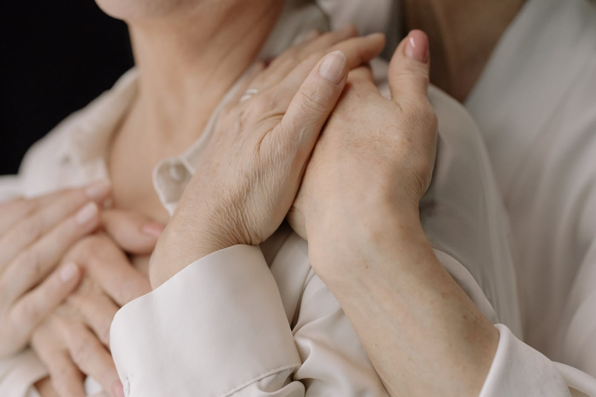
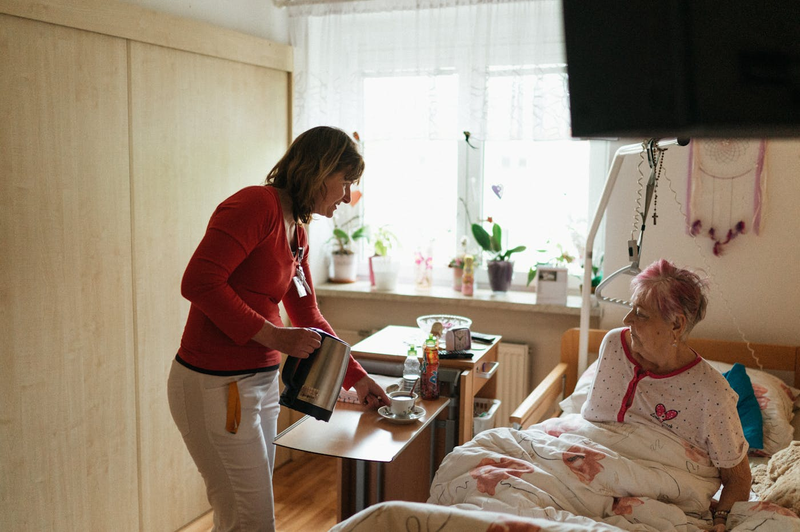
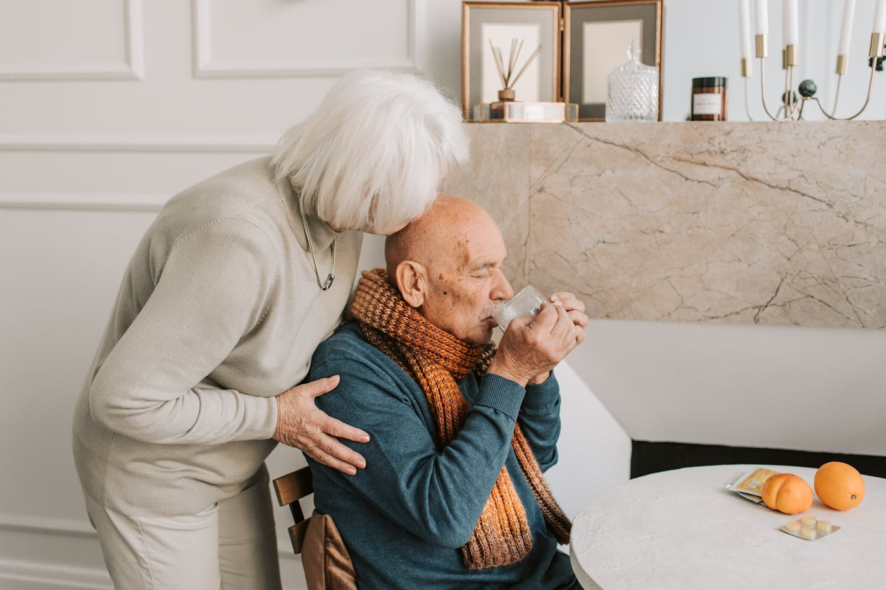
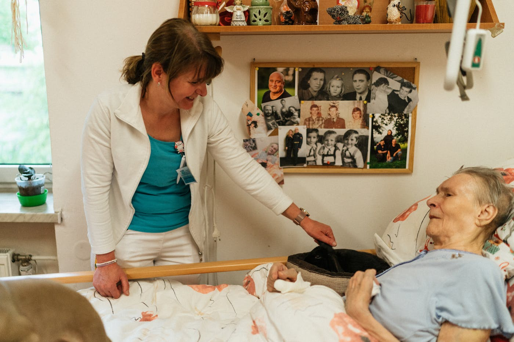
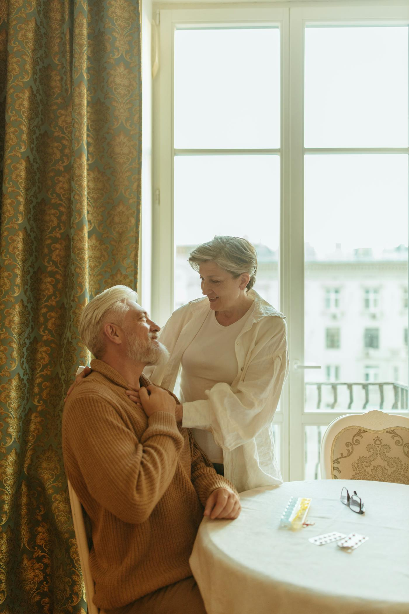

OUR STORY妻を看取って、わかったこと。
ウインライフは2022年4月、福岡市東区下原で生まれました。きっかけは、末期がんと闘った代表の妻の存在です。
「人を雇われる立場では、家族との大切な時間を確保できない」——その切実な想いから、代表は会社を立ち上げました。 妻を見送った今、わたしたちは同じ苦しみを少しでも減らせるよう、「病気」や「難しい家庭事情」を抱える方々を積極的に採用しています。
＿ウインライフ合同会社 代表社員 西濱昌典

福岡市全域に対応。直行直帰OK、地域に根ざした機動力のあるケアを提供します。

要介護認定を受けた方のお宅へ伺い、食事・入浴・排せつなどの身体介護と、調理・掃除・買い物などの生活援助を行います。介護保険の自己負担割合に応じてご利用いただけます。
くわしく見る

※ 各サービスの正式な運営規程は「情報公開」にPDFで掲載しています。
はじめての方も、まずはお気軽にご相談ください。ご利用開始まで丁寧にサポートします。
電話・フォームでお気軽に。「何から始めれば？」のご相談だけでも歓迎です。
ご自宅へ伺い、生活状況やご希望を丁寧にお聞きします。
必要なサービス・料金・回数をご提案。重要事項をご説明のうえご契約します。
担当ヘルパーが訪問を開始。状況に合わせて柔軟に見直します。
ウインライフは2022年4月、福岡市東区下原で生まれました。きっかけは、末期がんと闘った代表の妻の存在です。
「人を雇われる立場では、家族との大切な時間を確保できない」——その切実な想いから、代表は会社を立ち上げました。 妻を見送った今、わたしたちは同じ苦しみを少しでも減らせるよう、「病気」や「難しい家庭事情」を抱える方々を積極的に採用しています。


SOCIAL介護の現場から、社会へ。
乳がん検査の啓発活動、福祉のまちづくり動画コンテスト最優秀賞（2025）、困難を抱える家族を応援する「木の絆プロジェクト」協賛——ウインライフは本業の傍ら、地域と社会への貢献を続けています。